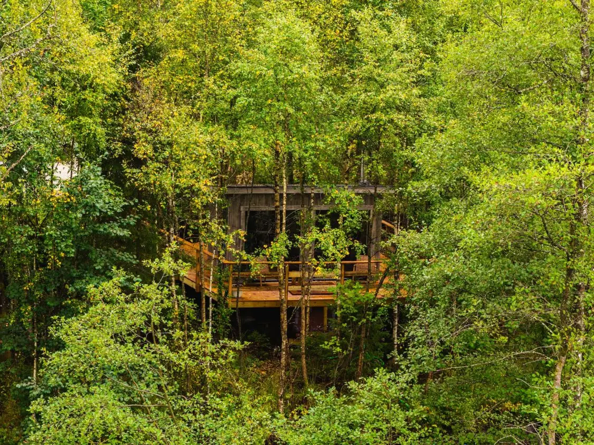

Der plätschernde Bach
Das Gästehaus liegt direkt an einem Bach. Schlafen Sie zu einer ruhigen Geräuschkulisse ein und wachen Sie mit ihr auf – und kühlen Sie sich nach der Sauna im Kaltwasserbecken ab.
Waldpfade, der See Åsunden und ein eigenes Ski- und Bikegebiet. Hier sind die besten Tipps der Gastgeber rund um Pinebo Palace – weitere finden Sie im Hausbuch im Gästehaus.
Lassen Sie das Auto eine Weile stehen. Einige der schönsten Erlebnisse warten direkt vor dem Gästehaus.
Das Gästehaus liegt direkt an einem Bach. Schlafen Sie zu einer ruhigen Geräuschkulisse ein und wachen Sie mit ihr auf – und kühlen Sie sich nach der Sauna im Kaltwasserbecken ab.

Der moosgrüne Wald beginnt an der Terrasse. Machen Sie einen Spaziergang zwischen den Bäumen und beenden Sie den Tag in der holzbefeuerten Sauna.

Der Wald rund um das Gästehaus ist reich an Pilzen und Beeren. Nehmen Sie einen Korb mit auf den Spaziergang – wir verraten Ihnen gern, wo Sie suchen sollten.
Eine kurze Runde oder ein ganzer Tag auf dem Weg? Die meisten Wanderwege erreichen Sie in 20 Minuten mit dem Auto vom Gästehaus.
Eine schöne Waldrunde.
Lassalyckan
Ein schöner Pfad, der am Eingang des Naturreservats Kråkebo beginnt.
Naturreservat Kråkebo
Ein Kulturweg mit malerischen Orten, rund 50 alten Kätnerhöfen, der Erdhütte Jordkulan in Nöre und vielen Bodendenkmälern.
Dalum
Beginnt am Freizeitgebiet Lassalyckan und führt auf einem gewundenen Waldweg hinunter zum Bach Pinebobäcken, vorbei an den Ruinen des Hofes Rönnåsen und hinauf zum Galtåsen – dem höchsten Punkt Västergötlands.
Lassalyckan
Der Wanderweg durch Grönahög bietet unterwegs mehrere interessante Stationen.
Grönahög–Påbo
Start und Ziel im charmanten Vegby. Beide Wege führen auf den Gipfel des Berges, 238 Meter über dem Meer.
Vegby
Eine der größten Moorlandschaften Südschwedens, mit Mooren, Bächen, Waldstücken und Inseln aus festem Boden – und einer reichen Vogelwelt.
Mörkö
Eine Trailstrecke durch spannende Natur, abseits der breiten Wege des Gebiets.
Lassalyckan
Ein abwechslungsreicher Weg, teils auf einem historischen Bahndamm, durch gut erhaltene Kulturlandschaft und an Resten des alten Reitwegs vorbei.
Marbäck
Ein schöner Wanderweg rund um den See Mogden, einen der Mittelpunkte von Hökerum, mit mehreren Bodendenkmälern und Sehenswürdigkeiten unterwegs.
Hökerum
Planen Sie nach Wetter, Untergrund und eigener Kondition. Längen und Schwierigkeitsgrade laut der Beschreibung des jeweiligen Weges.
Kühlen Sie sich an einem warmen Sommertag ab – mehrere Badestellen liegen am See Åsunden.
Zu Fuß vom Zentrum Ulricehamns erreichbar, direkt am Campingplatz Prången. Etwa 200 Meter flach abfallend, mit schönem Sandstrand.
Flaches Wasser · Sandstrand
Liegewiese und kleiner Sandstrand. Campingplatz, Kiosk und Cafeteria liegen in der Nähe.
Liegewiese · Kiosk
Am Nordende des Sees Åsunden, nahe dem Zentrum, mit großen Liegewiesen und Blick über den gesamten nördlichen Åsunden. Der Spielplatz Ulricaparken liegt direkt daneben, ein Kaltbadehaus, Café, Restaurant und Beachvolleyballfeld sind in der Nähe. Es gibt außerdem eigene Hundebadestellen.
Hundebadestelle · Nahe dem Zentrum
Fahrzeiten mit dem Auto von Pinebo Palace – zum Supermarkt, zur Skipiste oder in die Großstadt.
| Ausflugsziel | Was Sie erwartet | Fahrzeit mit dem Auto |
|---|---|---|
| Coop | Der nächste Supermarkt | 4 Min. |
| Willys | Supermarkt | 7 Min. |
| ICA Maxi Stormarknad | Großmarkt mit großer Auswahl | 10 Min. |
| Ulricehamn Ski Bike Hike | Ganzjährig geöffnet. Im Winter 8 Pisten, 7 Lifte, ein Kinderbereich und eine Skischule – im Sommer ein Bikepark mit 12 Downhill-Strecken, von leicht bis extrem. skibikehike.se | 13 Min. |
| Borås | Größere Stadt mit Geschäften und Restaurants | 30 Min. |
| Göteborg | Großstadt an der Westküste | 1 Std. 10 Min. |
Wandern Sie in der Frühlingssonne auf einem der Wege und lauschen Sie dem Bach, der am Gästehaus vorbeiplätschert.
Baden Sie im Åsunden, fahren Sie im Bikepark von Ski Bike Hike und grillen Sie in der Abendsonne auf der Terrasse.
Sammeln Sie Pilze und Beeren im Wald rund um das Gästehaus und wandern Sie, wenn sich das Laub verfärbt.
Fahren Sie Ski bei Ulricehamn Ski Bike Hike, 13 Minuten entfernt – und wärmen Sie sich danach in der holzbefeuerten Sauna und im Whirlpool auf.

Beginnen Sie den Tag in aller Ruhe mit dem Rauschen des Baches.
Eine 4,1 km lange Waldrunde bei Lassalyckan – genau richtig für einen Vormittag.
Machen Sie Pause am Sturebadet nahe dem Zentrum, mit Café, Restaurant und Hundebadestelle.
Zum Abschluss in die holzbefeuerte Sauna, Abkühlung im Kaltwasserbecken mit Bachwasser und Aufwärmen im Whirlpool.
Wohnen Sie in einem hundefreundlichen Gästehaus im Wald bei Ulricehamn – mit holzbefeuerter Sauna, Kaltwasserbecken und Whirlpool.